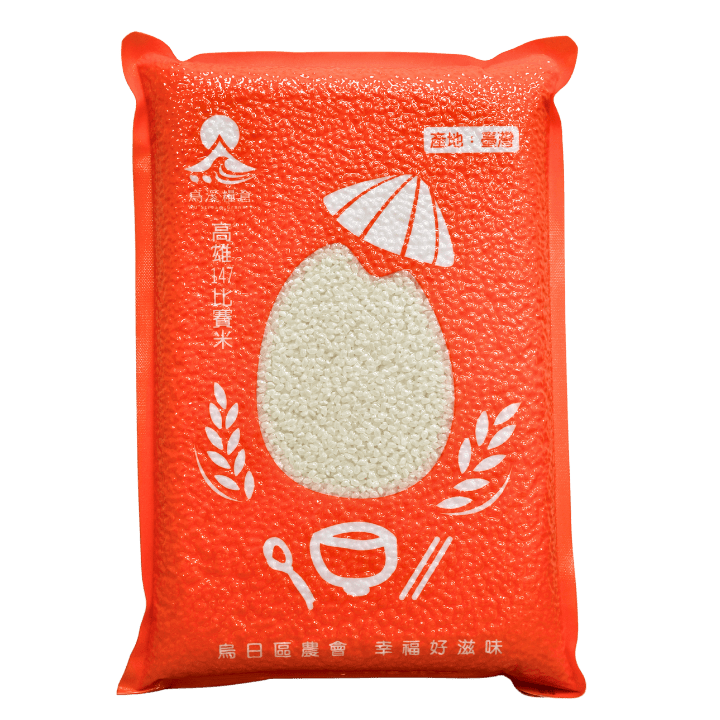
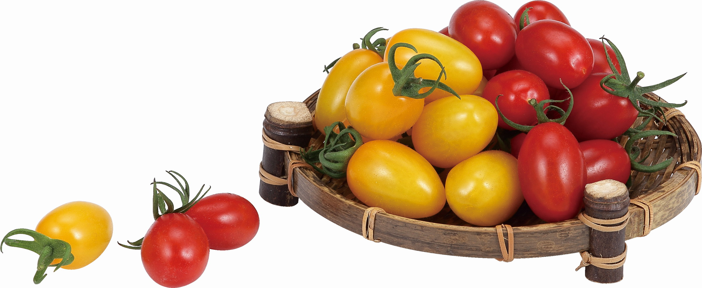
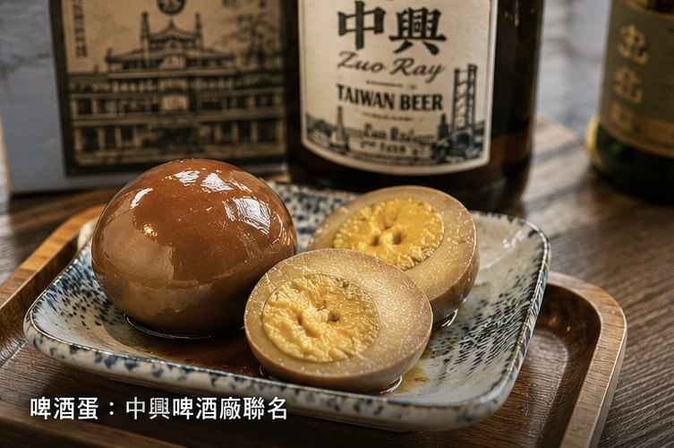
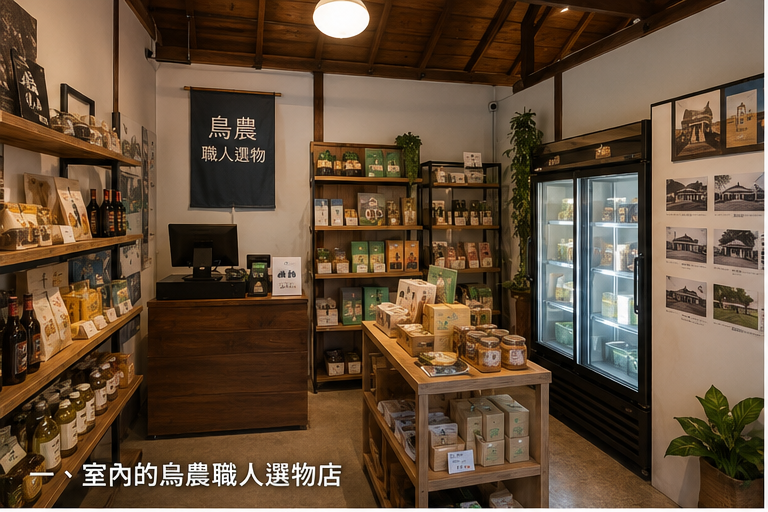
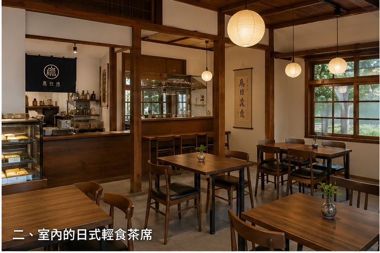
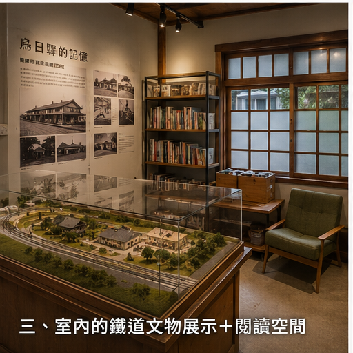
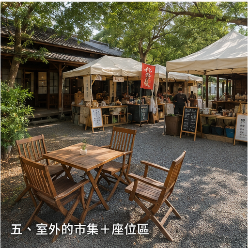
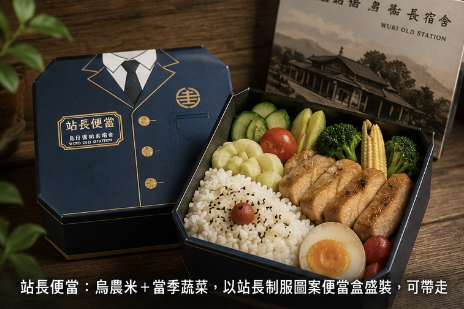
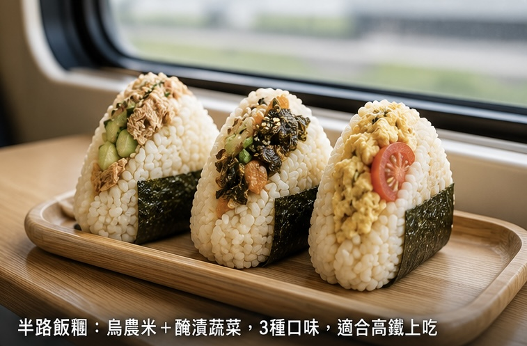
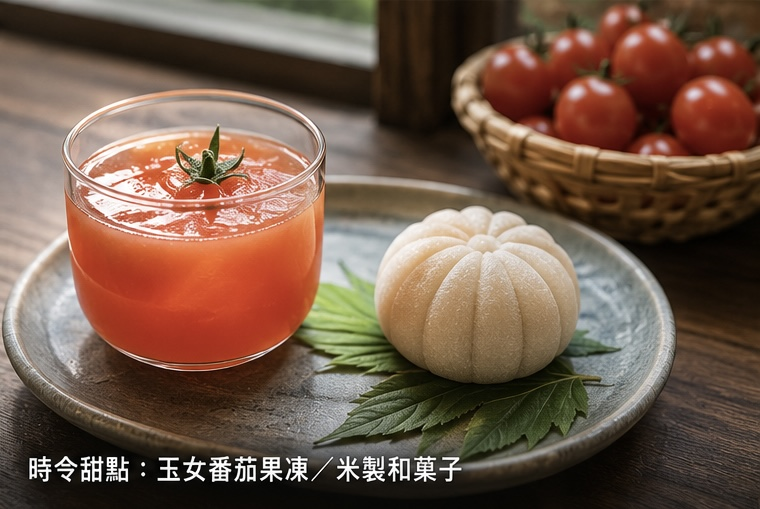

烏農好物，帶回家
每一件選物，都是烏日土地的精品提案

站長守護米禮盒

駛過的田．玉女番茄

半路撿到的蛋

鐵道記憶 × 在地食農 × 日式慢活
1905年烏日驛設站，從此成為這片土地人來人往的見證者。百年後，這棟日式宿舍依然佇立，承載著每一班列車駛過的聲音。
烏農米、玉女番茄、烏農鮮蛋，宿舍是農民與消費者距離最短的那條路。從田間到餐桌，每一口都有名有姓。
清領時期商旅中繼地，讓「路過」本身就成為值得停留的體驗。高鐵時代，我們繼續扮演那個讓你願意多留五分鐘的理由。
走進宿舍，每個角落都是一種生活提案

以策展思維精選在地農產與工藝品，每季更新主題，讓每次到訪都有新驚喜。

以日式宿舍建築為背景，提供以烏農食材製成的輕食與茶飲，慢活片刻。

1905年至今的烏日驛文物、老照片與鐵道器具，重現百年前的站務日常。

開放式庭院，每月市集日小農進駐，平日也是乘涼吃飯的好去處。
烏日土地為食材，每一口都是在地的味道

烏農米承載每一季的土地滋味，隨季節更迭的菜色讓每次都是初見。

三種口味，適合高鐵上吃。烏農米捏製，外帶友善包裝。
中興啤酒廠聯名，麥香鹹香涮嘴，一顆吃完還想再拿一顆。

番茄果凍與米製和菓子，季節限定，賣完不補，來了才遇得到。
每一件選物，都是烏日土地的精品提案



智慧冷鏈取貨系統，新鮮直送不等待
線上預約
每日 12:00 前
透過 LINE OA 下單
產地直送
烏日農會
當日午間配送
放入冷鏈
工作人員置入
智慧冷鏈取貨櫃
掃碼取貨
出站步行至宿舍
憑 QR Code 取貨
停留消費
順道進入輕食茶屋
或展示空間
每一次到訪，都值得成為特別的記憶
烏日農會攤位進駐庭院，在地小農親自介紹當季產品，現場試吃，直接帶走最新鮮的土地饋贈。
與在地學校及文史社群合辦，從烏日驛的歷史出發，走進田間了解食農生態，適合親子與文青同行。
親子食農 DIY 與鐵道蓋章體驗，跟著季節節氣動手做，讓孩子認識土地，讓大人找回初心。
台中市烏日區三民街197巷28號
台鐵區間車
最推薦
高鐵台中站 → 新烏日站
換乘台鐵 → 烏日站
區間車約 3 分鐘
每 40 分鐘一班
步行
欣賞沿途風景
從新烏日站出發
沿建國路方向步行
約 20 分鐘
沿途可欣賞烏日街景
計程車
快速便捷
高鐵台中站排班計程車
直達三民街
約 5 分鐘
適合攜帶大量採購品